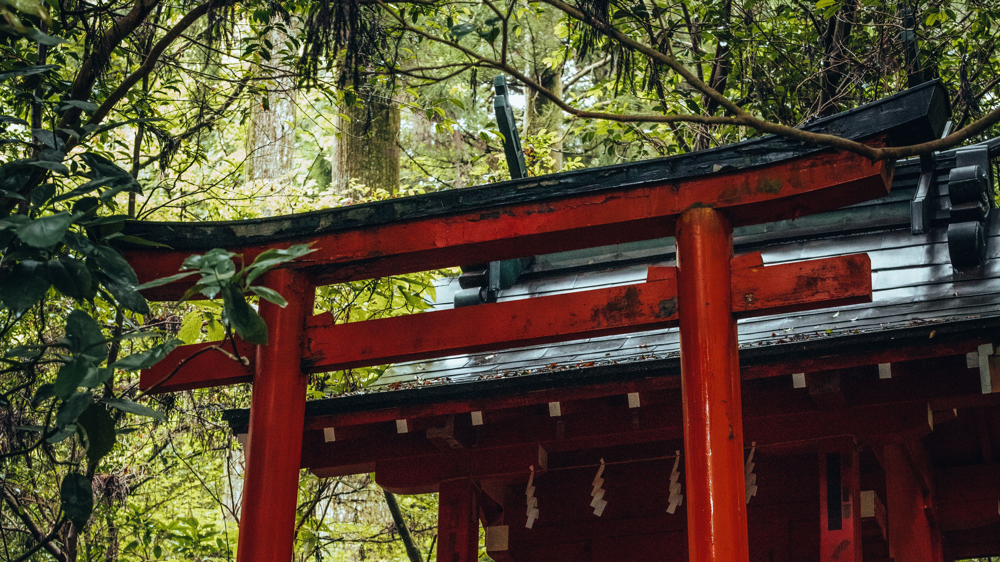
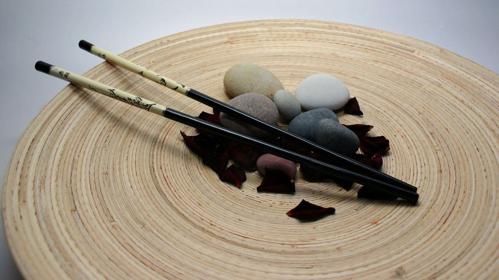
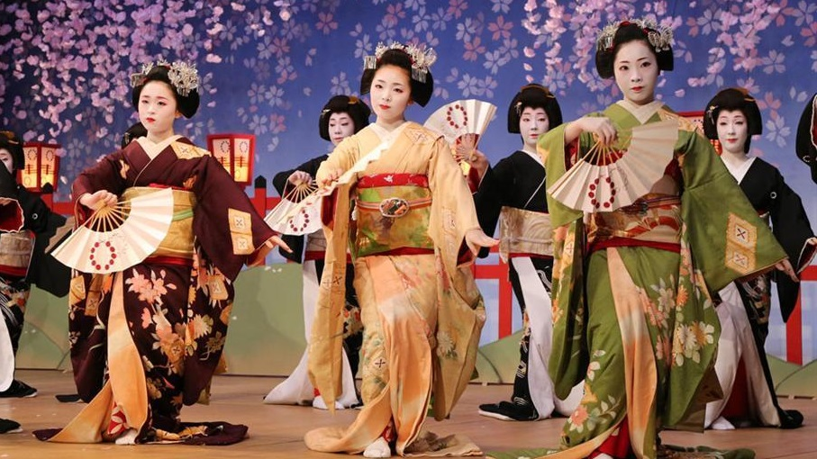

А что же с Японией...
сейчас?
Сегодня Япония - одна из ведущих экономических держав мира, известная своими высокими технологиями, инновациями и мощной промышленностью. Страна активно развивает сферы робототехники, автомобилестроения и электроники. Япония также славится своим высоким уровнем жизни, передовыми медицинскими услугами и долгожительством населения. Культурная жизнь процветает, с богатым наследием, сочетающим традиционные искусства и современные течения. Внешняя политика страны направлена на мирное сотрудничество и развитие международных отношений.



